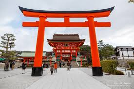

Discover the beauty and spirituality of this famous Shinto shrine in Kyoto.
Fushimi Inari Taisha is one of Japan's most iconic landmarks, famous for its thousands of vibrant red torii gates. Located in Kyoto, the shrine is dedicated to Inari, the Shinto god of rice, and is one of the most visited and photographed sites in Japan.
Visitors can walk through the endless rows of torii gates, hike to the shrine's summit for panoramic views, and explore the numerous smaller shrines and fox statues scattered along the trails. It's a place of serenity and spiritual significance.